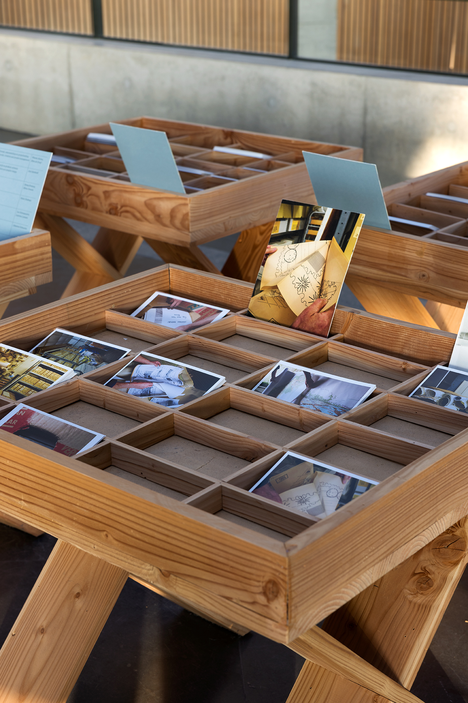
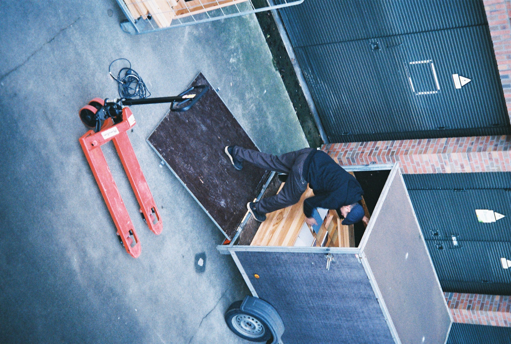
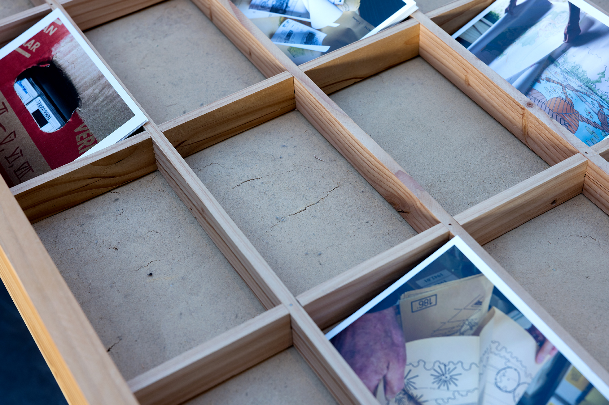
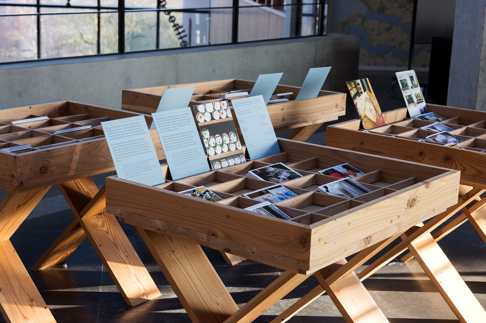
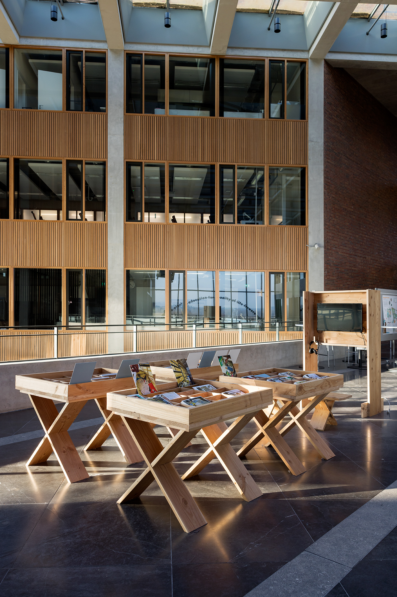
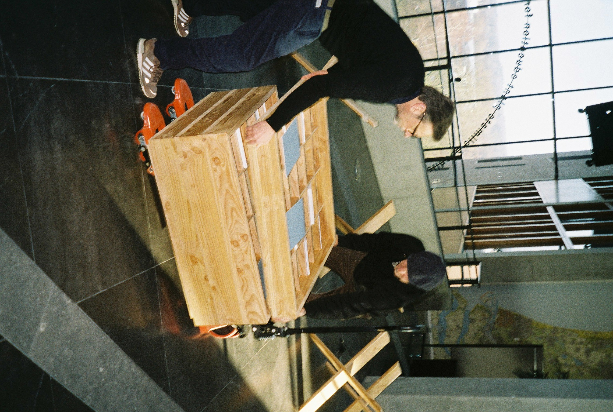
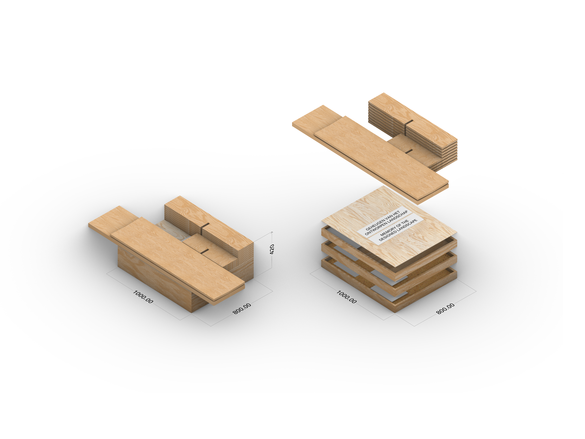
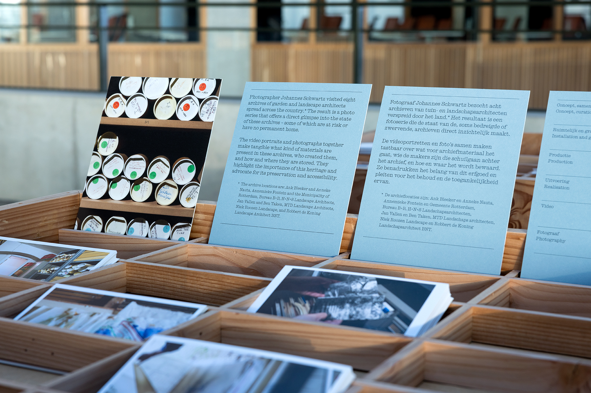

Memory of the Design Landscape – Travelling Exhibition
Collapsible exhibition design for the travelling version of Memory of the Designed Landscape for the Nieuwe Instituut. Here photographed at Wageningen University & Research. The challenge was to turn the orginal heavy installation built from clay, sand and wood into a compact show that is able to travel, without loosing its identity. The design takes the modularity of archive trays and reimagines them through the visual/material language developed for the original installation. All materials are reconfigured from the original design including the cob lining the trays. The same collapsable system developed for the benches in the orginal installation was used as the repeating structure for these archive trays through the new design.In a country where the landscape has been predominantly shaped by human processes, the history of landscape architecture is inseparable from the history of the Netherlands. The installation design for Memory of the Designed Landscape draws inspiration from the early labourers who shaped the land by digging turf (peat) and their plaggenhut dwellings.
Dyke-like in form, the ballasts supporting the display panels use an ancient building material and technique: cob (leem in Dutch). Cob is a mixture of earth (with a high clay content), sand, and straw. Unlike concrete, it can be rehydrated and returned to the landscape from which it came. The display panels themselves are crafted from Douglas fir planks salvaged from previous Nieuwe Instituut exhibitions, while the graphic panels are printed directly onto packaging materials retrieved from the Nieuwe Instituut archives.
Together, these elements form a series of stackable display trays for the photography content that appear to have emerged from the Dutch landscape.
Spatial and Graphic Design: Jack Bardwell
Build: Sietse Heslinga
Production: Elena Genesio
Curatorial team: Wietske Nutma & Eline Verkerk
Photography: 2,4-6,9 by Aad Hoogendoorn Installatie Geheugen van het Ontworpen Landschap. Nieuwe Instituut 2026.
↳ Research Page








